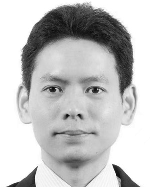
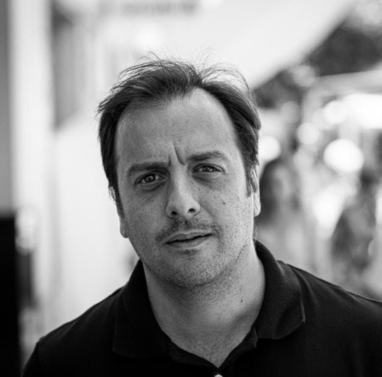
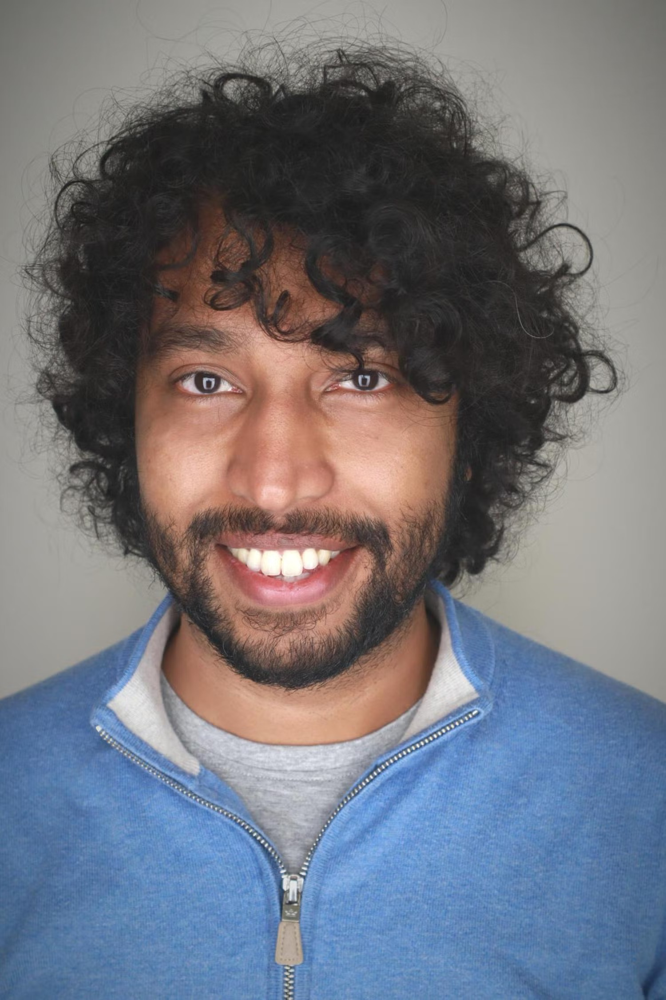
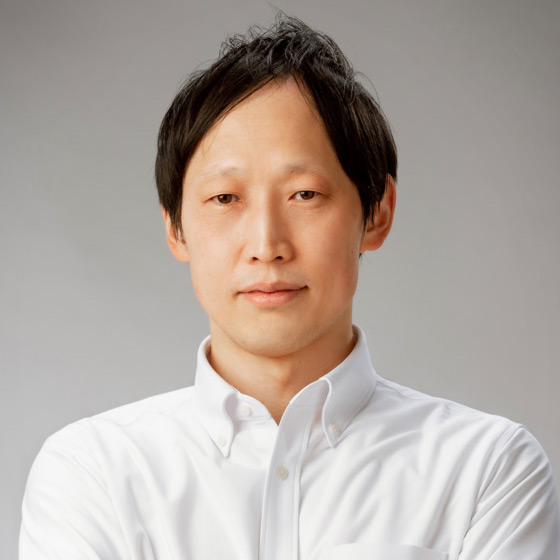

Confirmed Speakers

Dr. Yansong Chua
CNAEIT
China


Prof. Niceto Luque
University of Granada
Spain

Prof. Kaushik Jayaram
University of Colorado - Boulder
United States

Prof. Jun Morimoto
ATR Computational Neuroscience Labs
Japan
Dr. Yansong Chua
CNAEIT, China